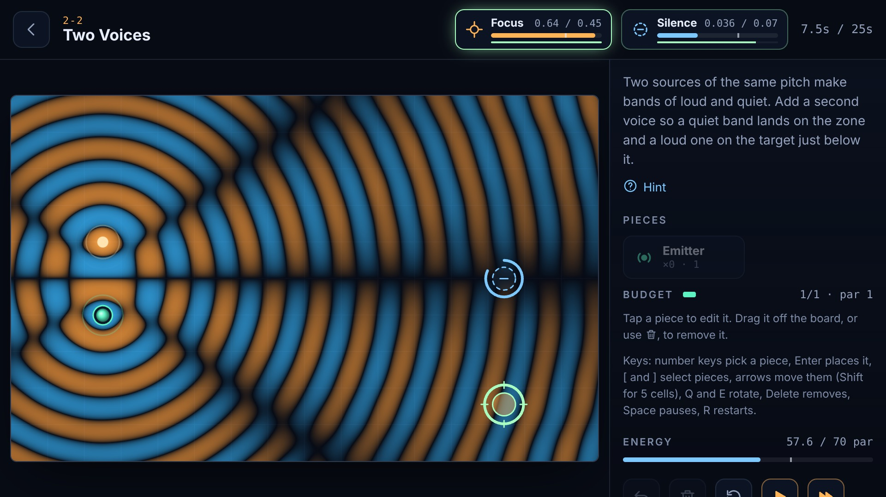
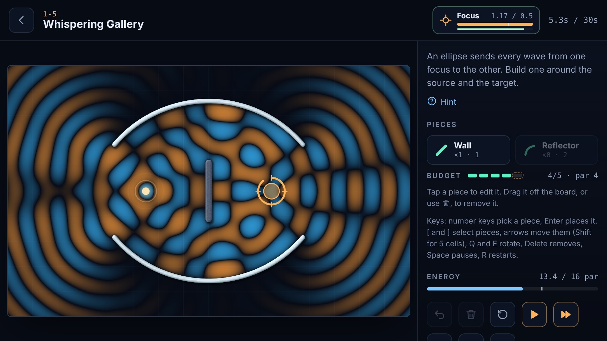
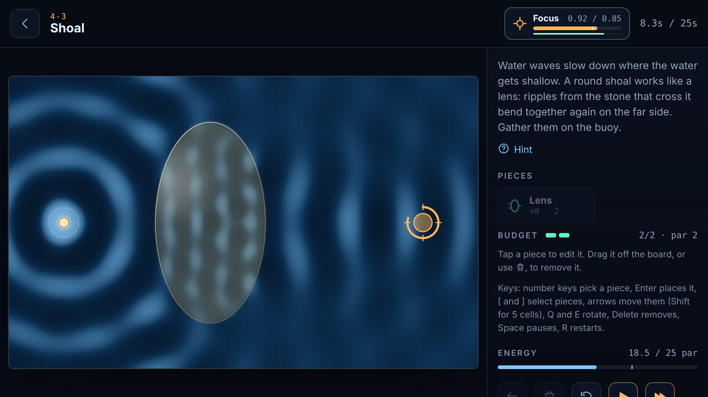
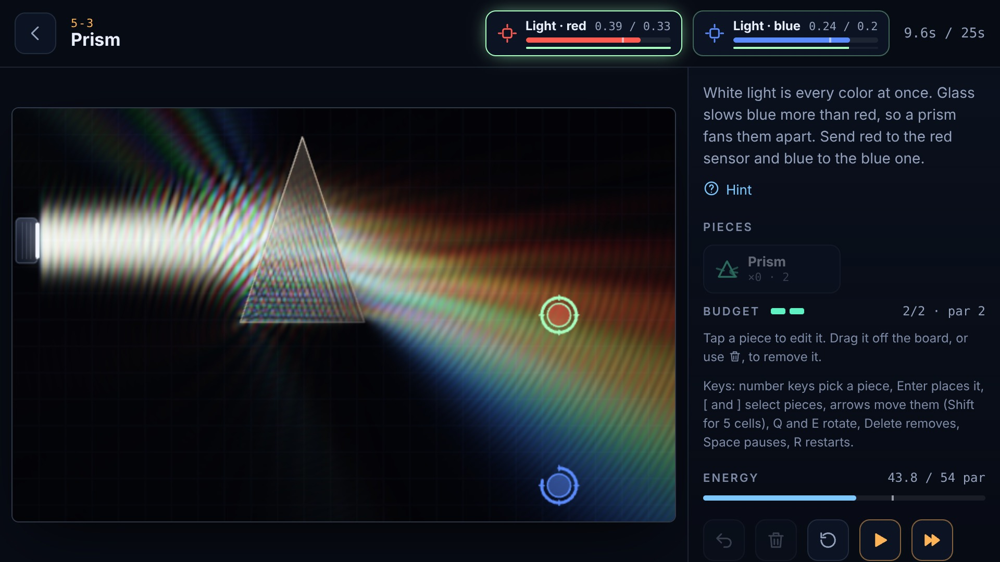
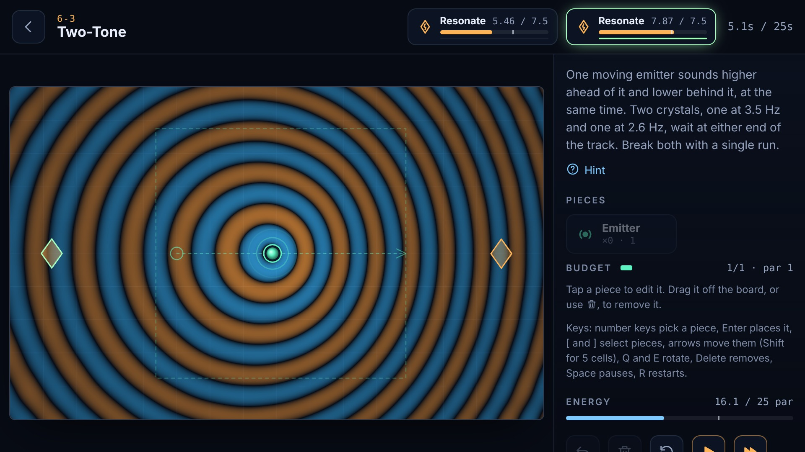

A puzzle game about real waves
Wavesmith
Every wave in Wavesmith is real. The board is a live simulation of the wave equation, so walls truly reflect, lenses truly focus, and two sounds truly cancel. If it would work in a physics lab, it works here.

28 levels
Six chapters of real physics
Place walls, mirrors, absorbers, lenses, prisms, and emitters to steer sound, water, and light onto targets, keep quiet zones quiet, and shatter crystals with exactly the right note.
-
01
Reflection
Bounce sound around corners and focus it with curved dishes.
-
02
Interference
Cancel a machine's hum with anti-noise, the way noise-cancelling headphones do.
-
03
Resonance
Shatter a wine glass at its own pitch and ring a chamber like an organ pipe.
-
04
Refraction
Bend sound with lenses, guide whale song down a slow channel, and focus waves over a shoal.
-
05
Light
Split white light into a rainbow with a prism and trap it by total internal reflection.
-
06
Doppler
Tune a moving siren so its rising and falling pitch hits the right note.
From the game
Watch the waves, see why it works
You see every ripple as it moves, so you can tell exactly why an idea worked, or didn't.




Play your way
Retry as often as you like
- Three stars per levelSolve it, then use fewer parts and spend less energy.
- No lives, no adsNo energy meters to wait on and nothing to grind.
- Feel the wavesHaptics build as the waves near a goal, on phones that support it.
- AccessibleColor-blind palette, reduced-motion mode, keyboard and screen-reader support.
- Works offlineThe Android app needs no connection to play.
- Build your ownA level editor for new puzzles, and links that share your solutions.
One purchase, the whole game
Three chapters free
Play the free chapters in your browser or on Android. A single in-app purchase unlocks every chapter, including future ones.